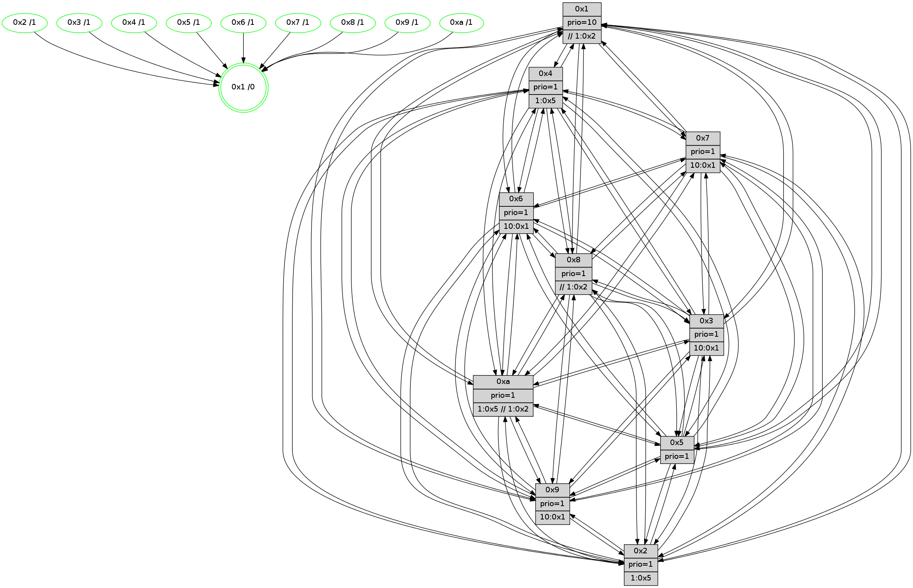

>> << IDX [start] -100 -25 -5 +0 +5 +25 +100 [650.636645079]
 Previous packets
----------------------------------------------------------------------
645.119733 beacon01(faad) #0 coord=01,02,03,04,05,06,07,0a,09,08 cycle=688.0ms assoc
-- color-indic=1 64 c9 02
645.129715 beacon02(faad) #0 coord=01,02,03,04,05,06,07,0a,09,08 cycle=688.0ms assoc 64 5a 33
645.139717 beacon03(faad) #0 coord=01,02,03,04,05,06,07,0a,09,08 cycle=688.0ms assoc 64 20 7e
645.149715 beacon04(faad) #0 coord=01,02,03,04,05,06,07,0a,09,08 cycle=688.0ms assoc 64 57 94
645.159715 beacon05(faad) #0 coord=01,02,03,04,05,06,07,0a,09,08 cycle=688.0ms assoc 64 2d d9
645.169716 beacon06(faad) #0 coord=01,02,03,04,05,06,07,0a,09,08 cycle=688.0ms assoc 64 a3 0e
645.179716 beacon07(faad) #0 coord=01,02,03,04,05,06,07,0a,09,08 cycle=688.0ms assoc 64 d9 43
645.189721 beacon0a(faad) #0 coord=01,02,03,04,05,06,07,0a,09,08 cycle=688.0ms assoc 64 a8 48
645.199721 beacon09(faad) #0 coord=01,02,03,04,05,06,07,0a,09,08 cycle=688.0ms assoc 64 26 9f
645.209720 beacon08(faad) #0 coord=01,02,03,04,05,06,07,0a,09,08 cycle=688.0ms assoc 64 5c d2
645.221898 [Hello(3): seq=414 sym=1,7,6,2,4,8,9,10,5 sysInfo= stat=1:4,11,0,1/7:13,4,15,3/6:5,10,12,6/2:0,3,14,7/4:2,14,14,4/8:9,3,12,2/9:11,13,2,6/10:13,11,13,5/5:13,3,0,6]
645.224660 [Color(10) seq=72 @0:0 prio=1 >1.@5]
645.226688 [Hello(1): seq=323 sym=4,2,9,5,10,3,8,6,7 sysInfo=coloring-mode-on,ColoringModeRequestCalled stat=4:4,5,1,0/2:15,2,6,8/9:0,3,0,0/5:11,15,7,9/10:9,4,8,7/3:13,8,13,9/8:2,14,10,6/6:13,2,8,5/7:15,8,11,7]
645.231914 [Hello(7): seq=414 sym=2,3,5,6,4,8,9,10,1 sysInfo=hasWarning stat=2:3,4,7,9/3:11,4,4,8/5:5,11,3,10/6:14,11,3,1/4:10,5,4,6/8:12,6,5,4/9:7,4,3,8/10:4,11,5,7/1:6,13,14,1]
645.234321 [Hello(4): seq=414 sym=5,7,6,2,3,9,8,10,1 sysInfo= stat=5:9,11,15,6/7:7,7,2,2/6:15,13,3,6/2:1,14,13,6/3:11,12,11,4/9:8,2,14,3/8:0,11,1,7/10:12,10,1,6/1:14,14,14,1]
645.242586 [Hello(6): seq=414 sym=2,3,5,4,7,9,8,10,1 sysInfo= stat=2:10,11,8,6/3:15,7,3,6/5:7,10,1,8/4:0,2,0,0/7:8,4,3,1/9:11,6,2,6/8:3,11,1,5/10:7,11,7,6/1:2,0,11,1]
----------------------------------------------------------------------
645.907862 beacon01(faad) #0 coord=01,02,03,04,05,06,07,0a,09,08 cycle=688.0ms assoc
-- color-indic=1 64 75 07
645.917844 beacon02(faad) #0 coord=01,02,03,04,05,06,07,0a,09,08 cycle=688.0ms assoc 64 e6 36
645.927846 beacon03(faad) #0 coord=01,02,03,04,05,06,07,0a,09,08 cycle=688.0ms assoc 64 9c 7b
645.937845 beacon04(faad) #0 coord=01,02,03,04,05,06,07,0a,09,08 cycle=688.0ms assoc 64 eb 91
645.947845 beacon05(faad) #0 coord=01,02,03,04,05,06,07,0a,09,08 cycle=688.0ms assoc 64 91 dc
645.957845 beacon06(faad) #0 coord=01,02,03,04,05,06,07,0a,09,08 cycle=688.0ms assoc 64 1f 0b
645.967846 beacon07(faad) #0 coord=01,02,03,04,05,06,07,0a,09,08 cycle=688.0ms assoc 64 65 46
645.977851 beacon0a(faad) #0 coord=01,02,03,04,05,06,07,0a,09,08 cycle=688.0ms assoc 64 14 4d
645.987850 beacon09(faad) #0 coord=01,02,03,04,05,06,07,0a,09,08 cycle=688.0ms assoc 64 9a 9a
645.997851 beacon08(faad) #0 coord=01,02,03,04,05,06,07,0a,09,08 cycle=688.0ms assoc 64 e0 d7
646.010041 [Hello(8): seq=358 sym=5,2,3,4,7,6,9,10,1 sysInfo=hasWarning,coloring-mode-on,ColoringModeIndicationCalled stat=5:2,3,0,6/2:8,9,7,1/3:11,4,14,8/4:15,0,2,6/7:8,13,2,5/6:3,14,14,6/9:10,10,1,5/10:7,3,15,6/1:8,6,15,0]
646.012771 [Color(7) seq=67 @0:0 prio=1]
646.014722 [Color(3) seq=79 @0:0 prio=1]
646.016371 [Hello(10): seq=347 sym=6,2,3,8,9,5,7,4,1 sysInfo= stat=6:10,15,3,1/2:6,9,8,1/3:0,2,7,3/8:12,2,14,6/9:9,11,11,4/5:12,5,12,7/7:2,15,15,2/4:9,1,10,6/1:4,1,14,1]
646.019886 [Hello(9): seq=358 sym=5,2,3,4,7,6,8,10,1 sysInfo=hasWarning stat=5:8,6,15,8/2:12,15,3,5/3:8,12,12,6/4:10,12,13,5/7:5,15,3,3/6:13,8,0,5/8:13,11,4,2/10:0,5,1,7/1:14,1,0,1]
646.022956 [Hello(5): seq=415 sym=7,6,4,3,1,9,8,10,2 sysInfo= stat=7:14,11,2,3/6:1,11,2,5/4:7,2,12,5/3:4,0,11,4/1:2,6,13,1/9:2,1,15,3/8:1,7,9,4/10:1,9,0,5/2:0,8,15,4]
646.025837 [Color(6) seq=84 @0:0 prio=1]
646.027112 [Hello(2): seq=411 sym=4,5,7,6,3,9,8,10,1 sysInfo=hasWarning stat=4:3,4,14,4/5:13,7,11,6/7:5,5,3,3/6:11,13,1,4/3:11,14,12,1/9:0,9,12,1/8:7,0,10,4/10:6,15,12,4/1:1,12,8,1]
646.030452 [Color(4) seq=58 @0:0 prio=1 >1.@5]
646.032060 [Color(9) seq=63 @0:0 prio=1]
646.035188 [Color(2) seq=60 @0:0 prio=1 >1.@5]
646.036658 [Color(1) seq=95 @0:0 prio=10 >>1.@a]
646.040591 [Color(5) seq=68 @0:0 prio=1]
----------------------------------------------------------------------
646.695994 beacon01(faad) #0 coord=01,02,03,04,05,06,07,0a,09,08 cycle=688.0ms assoc
-- color-indic=1 64 b1 09
646.705978 beacon02(faad) #0 coord=01,02,03,04,05,06,07,0a,09,08 cycle=688.0ms assoc 64 22 38
646.715977 beacon03(faad) #0 coord=01,02,03,04,05,06,07,0a,09,08 cycle=688.0ms assoc 64 58 75
646.725979 beacon04(faad) #0 coord=01,02,03,04,05,06,07,0a,09,08 cycle=688.0ms assoc 64 2f 9f
646.735977 beacon05(faad) #0 coord=01,02,03,04,05,06,07,0a,09,08 cycle=688.0ms assoc 64 55 d2
646.745977 beacon06(faad) #0 coord=01,02,03,04,05,06,07,0a,09,08 cycle=688.0ms assoc 64 db 05
646.755978 beacon07(faad) #0 coord=01,02,03,04,05,06,07,0a,09,08 cycle=688.0ms assoc 64 a1 48
646.765984 beacon0a(faad) #0 coord=01,02,03,04,05,06,07,0a,09,08 cycle=688.0ms assoc 64 d0 43
646.775982 beacon09(faad) #0 coord=01,02,03,04,05,06,07,0a,09,08 cycle=688.0ms assoc 64 5e 94
646.785983 beacon08(faad) #0 coord=01,02,03,04,05,06,07,0a,09,08 cycle=688.0ms assoc 64 24 d9
646.797199 [Hello(6): seq=415 sym=2,3,5,4,7,9,8,10,1 sysInfo= stat=2:11,12,8,6/3:15,7,3,6/5:7,11,1,8/4:0,3,0,0/7:8,4,3,1/9:11,7,2,6/8:4,11,1,5/10:7,11,7,6/1:2,1,11,1]
646.801677 [Color(8) seq=95 @0:0 prio=1]
646.803430 [Hello(3): seq=415 sym=1,7,6,2,4,8,9,10,5 sysInfo= stat=1:5,12,0,1/7:14,4,15,3/6:6,11,12,6/2:1,4,14,7/4:2,15,14,4/8:10,3,12,2/9:12,14,2,6/10:14,11,13,5/5:14,4,0,6]
646.806876 [Hello(7): seq=415 sym=2,3,5,6,4,8,9,10,1 sysInfo=hasWarning stat=2:4,5,7,9/3:11,5,4,8/5:6,12,3,10/6:15,12,3,1/4:11,6,4,6/8:13,6,5,4/9:8,5,3,8/10:5,11,5,7/1:6,14,14,1]
646.809895 [Hello(4): seq=415 sym=5,7,6,2,3,9,8,10,1 sysInfo= stat=5:9,12,15,6/7:7,7,2,2/6:0,13,3,6/2:1,15,13,6/3:11,12,11,4/9:8,3,14,3/8:1,11,1,7/10:12,10,1,6/1:14,15,14,1]
646.816632 [Color(10) seq=73 @0:0 prio=1 >1.@5]
646.824981 [Hello(1): seq=324 sym=4,2,9,5,10,3,8,6,7 sysInfo=coloring-mode-on,ColoringModeRequestCalled stat=4:4,5,1,0/2:15,2,6,8/9:0,3,0,0/5:11,0,7,9/10:9,4,8,7/3:13,8,13,9/8:3,14,10,6/6:14,2,8,5/7:0,8,11,7]
----------------------------------------------------------------------
647.484125 beacon01(faad) #0 coord=01,02,03,04,05,06,07,0a,09,08 cycle=688.0ms assoc
-- color-indic=1 64 0d 0c
647.494108 beacon02(faad) #0 coord=01,02,03,04,05,06,07,0a,09,08 cycle=688.0ms assoc 64 9e 3d
647.504108 beacon03(faad) #0 coord=01,02,03,04,05,06,07,0a,09,08 cycle=688.0ms assoc 64 e4 70
647.514108 beacon04(faad) #0 coord=01,02,03,04,05,06,07,0a,09,08 cycle=688.0ms assoc 64 93 9a
647.524109 beacon05(faad) #0 coord=01,02,03,04,05,06,07,0a,09,08 cycle=688.0ms assoc 64 e9 d7
647.534108 beacon06(faad) #0 coord=01,02,03,04,05,06,07,0a,09,08 cycle=688.0ms assoc 64 67 00
647.544110 beacon07(faad) #0 coord=01,02,03,04,05,06,07,0a,09,08 cycle=688.0ms assoc 64 1d 4d
647.554113 beacon0a(faad) #0 coord=01,02,03,04,05,06,07,0a,09,08 cycle=688.0ms assoc 64 6c 46
647.564113 beacon09(faad) #0 coord=01,02,03,04,05,06,07,0a,09,08 cycle=688.0ms assoc 64 e2 91
647.574114 beacon08(faad) #0 coord=01,02,03,04,05,06,07,0a,09,08 cycle=688.0ms assoc 64 98 dc
647.585627 [Hello(10): seq=348 sym=6,2,3,8,9,5,7,4,1 sysInfo= stat=6:11,0,3,1/2:7,10,8,1/3:0,2,7,3/8:12,2,14,6/9:10,12,11,4/5:13,6,12,7/7:2,15,15,2/4:9,2,10,6/1:5,2,14,1]
647.588659 [Hello(5): seq=416 sym=7,6,4,3,1,9,8,10,2 sysInfo= stat=7:15,11,2,3/6:2,11,2,5/4:8,2,12,5/3:5,0,11,4/1:3,6,13,1/9:2,1,15,3/8:2,8,9,4/10:1,10,0,5/2:0,8,15,4]
647.591348 [Hello(8): seq=359 sym=5,2,3,4,7,6,9,10,1 sysInfo=hasWarning,coloring-mode-on,ColoringModeIndicationCalled stat=5:3,4,0,6/2:9,10,7,1/3:12,5,14,8/4:0,1,2,6/7:9,14,2,5/6:4,15,14,6/9:11,11,1,5/10:8,4,15,6/1:9,7,15,0]
647.594080 [Color(4) seq=59 @0:0 prio=1 >1.@5]
647.595468 [Color(7) seq=68 @0:0 prio=1 >10.@1,1.@2,1.@3,1.@5]
647.598130 [Color(5) seq=69 @0:0 prio=1]
647.599649 [Hello(2): seq=412 sym=4,5,7,6,3,9,8,10,1 sysInfo=hasWarning stat=4:4,4,14,4/5:13,8,11,6/7:6,6,3,3/6:12,13,1,4/3:12,14,12,1/9:0,9,12,1/8:8,1,10,4/10:6,0,12,4/1:2,13,8,1]
647.603091 [Color(2) seq=61 @0:0 prio=1 >1.@5]
647.605406 [STC(1) #0.49 tree-change,inconsistent-stability,stable,to-color d=0]
647.607381 [Color(3) seq=80 @0:0 prio=1 >10.@1,1.@2,1.@5,1.@8]
647.610368 [Color(1) seq=96 @0:0 prio=10]
647.612053 [Color(6) seq=85 @0:0 prio=1 >10.@1,1.@2,1.@3,1.@5]
647.615909 [Hello(9): seq=359 sym=5,2,3,4,7,6,8,10,1 sysInfo=hasWarning stat=5:8,7,15,8/2:12,0,3,5/3:9,12,12,6/4:11,12,13,5/7:6,15,3,3/6:14,8,0,5/8:14,12,4,2/10:0,6,1,7/1:15,2,0,1]
647.619378 [Color(9) seq=64 @0:0 prio=1 >10.@1,1.@2,1.@3,1.@5]
----------------------------------------------------------------------
648.272254 beacon01(faad) #0 coord=01,02,03,04,05,06,07,0a,09,08 cycle=688.0ms assoc
-- color-indic=1 64 d9 39
648.282238 beacon02(faad) #0 coord=01,02,03,04,05,06,07,0a,09,08 cycle=688.0ms assoc 64 4a 08
648.292238 beacon03(faad) #0 coord=01,02,03,04,05,06,07,0a,09,08 cycle=688.0ms assoc 64 30 45
648.302237 beacon04(faad) #0 coord=01,02,03,04,05,06,07,0a,09,08 cycle=688.0ms assoc 64 47 af
648.312237 beacon05(faad) #0 coord=01,02,03,04,05,06,07,0a,09,08 cycle=688.0ms assoc 64 3d e2
648.322237 beacon06(faad) #0 coord=01,02,03,04,05,06,07,0a,09,08 cycle=688.0ms assoc 64 b3 35
648.332238 beacon07(faad) #0 coord=01,02,03,04,05,06,07,0a,09,08 cycle=688.0ms assoc 64 c9 78
648.342241 beacon0a(faad) #0 coord=01,02,03,04,05,06,07,0a,09,08 cycle=688.0ms assoc 64 b8 73
648.352242 beacon09(faad) #0 coord=01,02,03,04,05,06,07,0a,09,08 cycle=688.0ms assoc 64 36 a4
648.362243 beacon08(faad) #0 coord=01,02,03,04,05,06,07,0a,09,08 cycle=688.0ms assoc 64 4c e9
648.373191 [Hello(1): seq=325 sym=4,2,9,5,10,3,8,6,7 sysInfo=coloring-mode-on,ColoringModeRequestCalled stat=4:4,5,1,0/2:15,2,6,8/9:1,4,0,0/5:12,0,7,9/10:10,4,8,7/3:13,8,13,9/8:3,14,10,6/6:14,3,8,5/7:0,8,11,7]
648.375589 [STC(5)->1 #0.49 tree-change,inconsistent-stability,stable,to-color d=1]
648.377651 [Hello(7): seq=416 sym=2,3,5,6,4,8,9,10,1 sysInfo=hasWarning stat=2:5,6,7,9/3:11,6,4,8/5:6,13,3,10/6:15,13,3,1/4:12,6,4,6/8:13,6,5,4/9:9,6,3,8/10:6,12,5,7/1:7,15,15,1]
648.380797 [STC(7)->1 #0.49 tree-change,inconsistent-stability,stable,to-color d=1]
648.382539 [STC(8)->1 #0.49 tree-change,inconsistent-stability,stable,to-color d=1]
648.384044 [STC(2)->1 #0.49 tree-change,inconsistent-stability,stable,to-color d=1]
648.385391 PARSE ERROR************************
Traceback (most recent call last):
File "PacketAnalysis.py", line 167, in showOperaPacket
structPacket = OperaPacketParse.parsePacket(rawPacket)
File "../../pkg-python/HipSens/Core/OperaPacketParse.py", line 461, in parsePacket
return parseHelloMessage(data)
File "../../pkg-python/HipSens/Core/OperaPacketParse.py", line 109, in parseHelloMessage
sysInfo,stability,colorInfo = struct.unpack("!HBB", linkList[0:4])
error: unpack requires a string argument of length 4
48 34 03 00 01 a0 00 02 02 12 01 00 07 00 06 00 02 00 04 00 08 00 09 00 0a 00 05 00 53 04 00 00 00 00 4c 12 10 d6 3f 4f 6c c6 7e 41 4e f3 2c 3a 62 fd 5d cf 60 4e 53 e8
648.387935 [Hello(6): seq=416 sym=2,3,5,4,7,9,8,10,1 sysInfo= stat=2:11,12,8,6/3:0,7,3,6/5:7,11,1,8/4:1,3,0,0/7:9,4,3,1/9:12,8,2,6/8:4,12,1,5/10:8,12,7,6/1:3,1,11,1]
648.390731 [Hello(4): seq=416 sym=5,7,6,2,3,9,8,10,1 sysInfo= stat=5:10,13,15,6/7:7,8,2,2/6:0,14,3,6/2:2,0,13,6/3:11,13,11,4/9:9,4,14,3/8:1,11,1,7/10:13,11,1,6/1:15,0,15,1]
648.395169 [STC(4)->1 #0.49 tree-change,inconsistent-stability,stable,to-color d=1]
648.399822 [Color(8) seq=96 @0:0 prio=1 >>1.@2,1.@3,1.@5]
648.405535 [STC(10)->1 #0.49 tree-change,inconsistent-stability,stable,to-color d=1]
648.407194 [Color(10) seq=74 @0:0 prio=1 >1.@5 >>1.@2,1.@3,1.@5]
----------------------------------------------------------------------
649.060384 beacon01(faad) #0 coord=01,02,03,04,05,06,07,0a,09,08 cycle=688.0ms assoc
-- color-indic=1 64 65 3c
649.070367 beacon02(faad) #0 coord=01,02,03,04,05,06,07,0a,09,08 cycle=688.0ms assoc 64 f6 0d
649.080367 beacon03(faad) #0 coord=01,02,03,04,05,06,07,0a,09,08 cycle=688.0ms assoc 64 8c 40
649.090367 beacon04(faad) #0 coord=01,02,03,04,05,06,07,0a,09,08 cycle=688.0ms assoc 64 fb aa
649.100368 beacon05(faad) #0 coord=01,02,03,04,05,06,07,0a,09,08 cycle=688.0ms assoc 64 81 e7
649.110367 beacon06(faad) #0 coord=01,02,03,04,05,06,07,0a,09,08 cycle=688.0ms assoc 64 0f 30
649.120368 beacon07(faad) #0 coord=01,02,03,04,05,06,07,0a,09,08 cycle=688.0ms assoc 64 75 7d
649.130371 beacon0a(faad) #0 coord=01,02,03,04,05,06,07,0a,09,08 cycle=688.0ms assoc 64 04 76
649.140371 beacon09(faad) #0 coord=01,02,03,04,05,06,07,0a,09,08 cycle=688.0ms assoc 64 8a a1
649.150371 beacon08(faad) #0 coord=01,02,03,04,05,06,07,0a,09,08 cycle=688.0ms assoc 64 f0 ec
649.163520 [Hello(8): seq=360 sym=5,2,3,4,7,6,9,10,1 sysInfo=hasWarning,coloring-mode-on,ColoringModeIndicationCalled stat=5:3,5,0,6/2:10,11,7,1/3:12,6,14,8/4:0,2,2,6/7:9,15,2,5/6:4,0,14,6/9:12,12,1,5/10:8,5,0,6/1:10,8,0,0]
649.171265 [Hello(10): seq=349 sym=6,2,3,8,9,5,7,4,1 sysInfo= stat=6:11,1,3,1/2:8,11,8,1/3:0,3,7,3/8:13,2,14,6/9:11,13,11,4/5:14,7,12,7/7:2,0,15,2/4:9,3,10,6/1:6,3,15,1]
649.173873 [Hello(5): seq=417 sym=7,6,4,3,1,9,8,10,2 sysInfo= stat=7:0,11,3,3/6:3,12,2,5/4:9,2,13,5/3:6,1,11,4/1:3,7,14,1/9:3,2,15,3/8:2,9,10,4/10:2,11,1,5/2:1,9,0,4]
649.176420 [Color(1) seq=97 @0:0 prio=10 >>1.@2,1.@3,1.@5]
649.179313 [Hello(9): seq=360 sym=5,2,3,4,7,6,8,10,1 sysInfo=hasWarning stat=5:9,7,15,8/2:12,0,4,5/3:10,12,12,6/4:12,12,14,5/7:7,15,4,3/6:15,8,0,5/8:14,13,5,2/10:1,7,2,7/1:0,2,0,1]
649.182447 [Color(9) seq=65 @0:0 prio=1 >10.@1,1.@2,1.@3,1.@5]
----------------------------------------------------------------------
649.848514 beacon01(faad) #0 coord=01,02,03,04,05,06,07,0a,09,08 cycle=688.0ms assoc
-- color-indic=1 64 a1 32
649.858496 beacon02(faad) #0 coord=01,02,03,04,05,06,07,0a,09,08 cycle=688.0ms assoc 64 32 03
649.868497 beacon03(faad) #0 coord=01,02,03,04,05,06,07,0a,09,08 cycle=688.0ms assoc 64 48 4e
649.878498 beacon04(faad) #0 coord=01,02,03,04,05,06,07,0a,09,08 cycle=688.0ms assoc 64 3f a4
649.888498 beacon05(faad) #0 coord=01,02,03,04,05,06,07,0a,09,08 cycle=688.0ms assoc 64 45 e9
649.898497 beacon06(faad) #0 coord=01,02,03,04,05,06,07,0a,09,08 cycle=688.0ms assoc 64 cb 3e
649.908498 beacon07(faad) #0 coord=01,02,03,04,05,06,07,0a,09,08 cycle=688.0ms assoc 64 b1 73
649.918502 beacon0a(faad) #0 coord=01,02,03,04,05,06,07,0a,09,08 cycle=688.0ms assoc 64 c0 78
649.928505 beacon09(faad) #0 coord=01,02,03,04,05,06,07,0a,09,08 cycle=688.0ms assoc 64 4e af
649.938503 beacon08(faad) #0 coord=01,02,03,04,05,06,07,0a,09,08 cycle=688.0ms assoc 64 34 e2
649.949452 [Hello(1): seq=326 sym=4,2,9,5,10,3,8,6,7 sysInfo=coloring-mode-on,ColoringModeRequestCalled stat=4:5,5,2,0/2:15,3,7,8/9:2,5,0,0/5:12,0,8,9/10:10,5,9,7/3:14,8,13,9/8:4,15,11,6/6:15,3,8,5/7:1,8,12,7]
649.952731 [Hello(4): seq=417 sym=5,7,6,2,3,9,8,10,1 sysInfo= stat=5:11,13,15,6/7:7,8,2,2/6:0,14,3,6/2:2,1,13,6/3:11,13,11,4/9:10,5,14,3/8:2,12,1,7/10:14,12,2,6/1:0,1,15,1]
649.956086 [Color(10) seq=75 @0:0 prio=1 >1.@5 >>1.@2,1.@3,1.@5]
649.958128 [Color(8) seq=97 @0:0 prio=1 >>1.@2,1.@3,1.@5]
649.960491 [Hello(3): seq=417 sym=1,7,6,2,4,8,9,10,5 sysInfo= stat=1:6,14,0,1/7:15,4,15,3/6:7,12,12,6/2:2,5,14,7/4:4,15,15,4/8:11,4,12,2/9:14,0,2,6/10:0,13,14,5/5:15,4,0,6]
649.964838 [Hello(6): seq=417 sym=2,3,5,4,7,9,8,10,1 sysInfo= stat=2:12,13,8,6/3:0,7,3,6/5:8,11,1,8/4:2,3,1,0/7:9,4,3,1/9:13,9,2,6/8:5,13,1,5/10:9,13,8,6/1:3,2,11,1]
649.971681 [Hello(7): seq=417 sym=2,3,5,6,4,8,9,10,1 sysInfo=hasWarning stat=2:6,7,8,9/3:12,6,4,8/5:7,13,3,10/6:0,13,3,1/4:13,6,5,6/8:14,7,6,4/9:10,7,3,8/10:7,13,6,7/1:8,0,15,1]